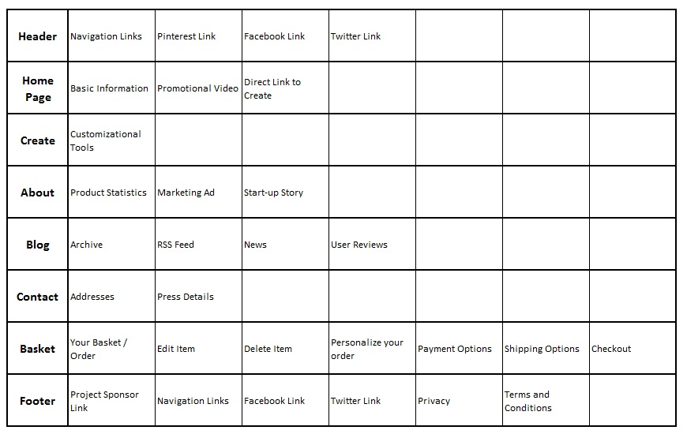
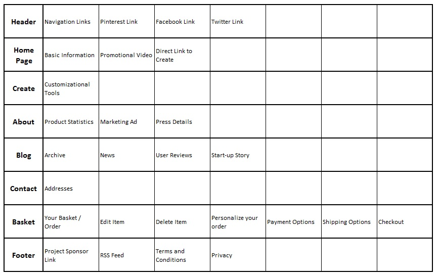
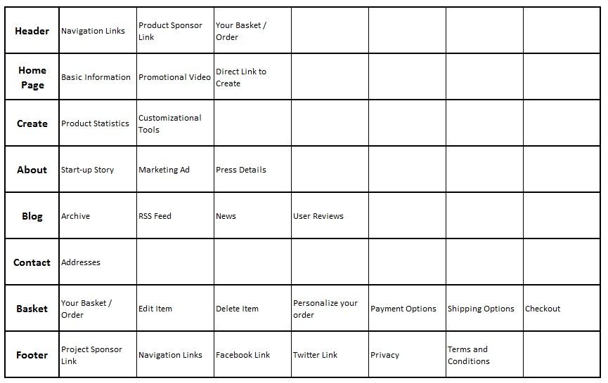
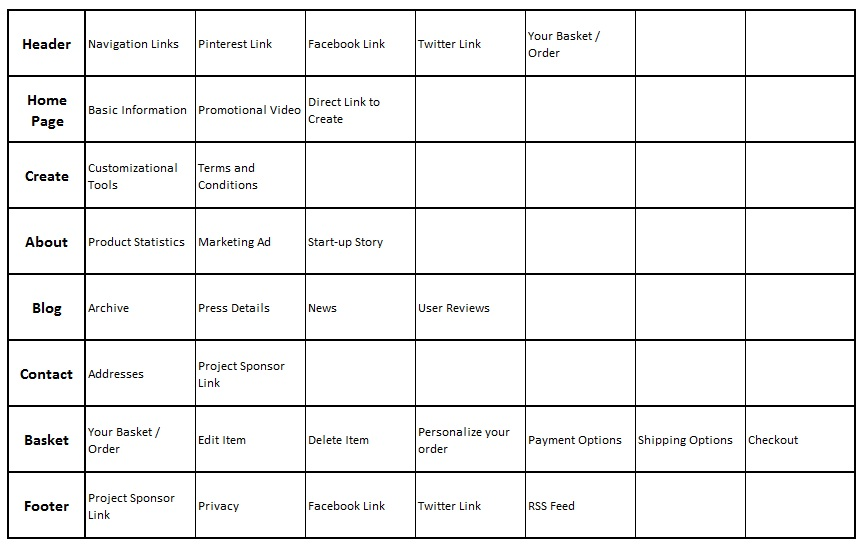

Initial Cards
I divided the website https://www.foldable.me/ into the following major groups...
- Header
- Home (Index) Page
- Create
- About
- Blog
- Contact
- Basket
- Footer
From here, I went on further to create cards for elements of the site. Those cards were...
- Navigation: links to each major content section
- Pinterest Link
- Facebook Link
- Twitter Link
- Basic Information about Foldables (item price, shipping price)
- Promotional Video
- Direct link to Create Page
- Customization Tools (colors, hair, eyes, nose, mouth, eyes, skin, face shape, facial hair, mustache, apparel)
- Product Statistics (size, weight, creation stats)
- Delivery Information Based on Location (cost, time)
- Marketing Ad (video, attention grabbing details)
- Start-up Story
- Archive
- RSS Feed
- News
- User Reviews
- Addresses (business and e-mail)
- Press Details
- Your Basket / Order
- Edit Item
- Delete Item
- Personalize Your Order
- Payment Details
- Shipping Options
- Checkout
- Project Sponsor Link
- Privacy
- Terms and Conditions
My Sort
After dividing the site up into groups and elements, here's the results from my sort:
Results: Participant #1
The results from the first person I had sort the elements is shown below.
Results: Participant #2
The results from the second person I had sort the elements is shown below.
Results: Participant #3
The results from the third person I had sort the elements is shown below.
Results: Summary
As you can see from the results above, all the sorts were very similar. I allowed the participants that I had sort my elements the option of using cards more than once. This was where most of the variation between sorts came from. The categories that varied were: Header, Create, About, Contact, and Footer. The largest variation was in the Header and Footer, mostly as a result of the social networking links. I think some users would be hesitant to place these links in both the Header and the Footer, but it personally makes sense to me as to why they're in both places. The next most important element that varied was the Navigation. Half of the sorting results placed Navigation in the Header and the Footer, while the other half placed it only in the Header. I think the site would like fine either way, and that navigation is also included in the footer as a convenience for users (so they don't have to scroll to the top of the page).
In each result, the Home Page and Basket contained the same elements as the do on the current site. I think this says that the design of the current index page of the site is very well laid out. It's small, simple, and to-the-point. Some users said they would like a copy of the Terms and Conditions and Product Specifications to also be placed on the Create page. Some of the users swapped elements between the About and Contact pages, mainly the Start-up Story and Press Details. Overall, I would say that my results and expectations of the site were slightly biased, as I'd seen the site in its current form, and I really like the layout which affected how I placed elements.